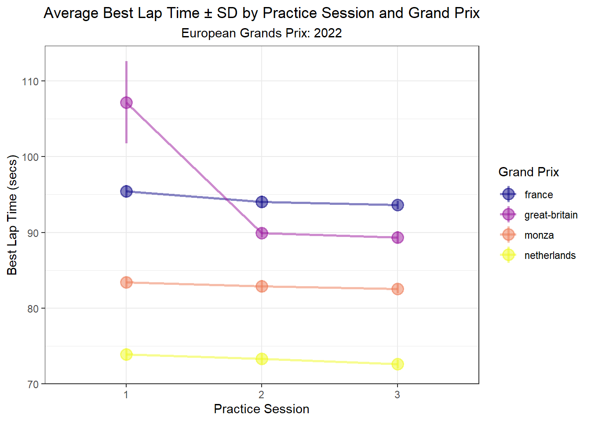
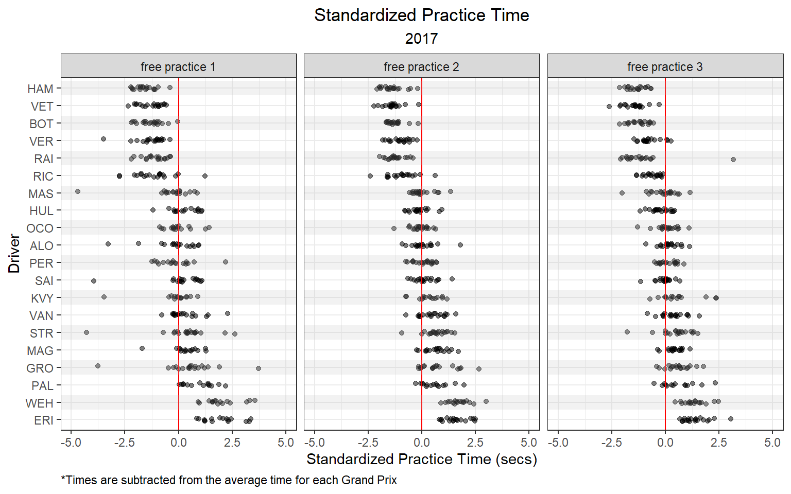

Chapter 3 Qualifying
3.1 Distribution of Qualifying Times by Grand Prix
Let’s look at the average qualifying times by Grand Prix.
starting_and_ending_time_clean %>%
mutate(year = factor(year)) %>%
group_by(track) %>%
summarize(mean = mean(Time_grid_secs, na.rm = T),
sd = sd(Time_grid_secs, na.rm = T)) %>%
ggplot(aes(x = mean, y = fct_reorder(track, mean))) +
geom_point(position = position_jitter(h = 0, w = 0.3), alpha = 0.5) +
theme_bw() +
labs(x = 'Average Qualifying Time (secs)',
y = 'Grand Prix',
title = 'Average Qualifying Times',
subtitle = '2014 - 2022')+
theme(plot.title = element_text(hjust = 0.5),
plot.subtitle = element_text(hjust = 0.5),
legend.position = "none")
A lot can happen during a qualifying session causing variability among the cars. Therefore, it’s a good idea to include a measure of variance in this plot. So, we can add standard error bars to the plot we just made.
starting_and_ending_time_clean %>%
mutate(year = factor(year)) %>%
group_by(track) %>%
summarize(mean = mean(Time_grid_secs, na.rm = T),
sd = sd(Time_grid_secs, na.rm = T)) %>%
mutate(lower = mean - sd,
upper = mean + sd) %>%
ggplot(aes(x = mean, xmin = lower, xmax = upper, y = fct_reorder(track, mean))) +
geom_pointrange(alpha = 0.5) +
theme_bw() +
labs(x = 'Average Qualifying Time \u00b1 SD (secs)',
y = 'Grand Prix',
title = 'Average Qualifying Times',
subtitle = '2014 - 2022')+
theme(plot.title = element_text(hjust = 0.5),
plot.subtitle = element_text(hjust = 0.5),
legend.position = "none")
Below, we can visualize the average qualifying times by year.
starting_and_ending_time_clean %>%
mutate(year = factor(year)) %>%
group_by(year) %>%
summarize(mean = mean(Time_grid_secs, na.rm = T),
sd = sd(Time_grid_secs, na.rm = T)) %>%
mutate(lower = mean - sd,
upper = mean + sd) %>%
ggplot(aes(y = mean, x = year)) +
geom_point(alpha = 0.5, size = 3) +
theme_bw() +
labs(x = 'Year',
y = 'Average Qualifying Time (secs)',
title = 'Average Qualifying Times',
subtitle = '2014 - 2022')+
theme(plot.title = element_text(hjust = 0.5),
plot.subtitle = element_text(hjust = 0.5),
legend.position = "none")
starting_and_ending_time_clean %>%
mutate(year = factor(year)) %>%
group_by(year) %>%
summarize(mean = mean(Time_grid_secs, na.rm = T),
sd = sd(Time_grid_secs, na.rm = T)) %>%
mutate(lower = mean - sd,
upper = mean + sd) %>%
ggplot(aes(y = mean, ymin = lower, ymax = upper, x = year)) +
geom_pointrange(alpha = 0.5) +
theme_bw() +
labs(x = 'Year',
y = 'Average Qualifying Time \u00b1 SD (secs)',
title = 'Average Qualifying Times',
subtitle = '2014 - 2022')+
theme(plot.title = element_text(hjust = 0.5),
plot.subtitle = element_text(hjust = 0.5),
legend.position = "none")
Qualifying times by year for a few tracks.
starting_and_ending_time_clean %>%
filter(track %in% c('australia', 'monaco', 'brazil', 'austria', 'canada', 'united-states')) %>%
mutate(year = factor(year)) %>%
group_by(year, track) %>%
summarize(mean = mean(Time_grid_secs, na.rm = T),
sd = sd(Time_grid_secs, na.rm = T)) %>%
mutate(lower = mean - sd,
upper = mean + sd) %>%
ggplot(aes(y = mean, ymin = lower, ymax = upper, x = year)) +
geom_pointrange(alpha = 0.5) +
theme_bw() +
labs(x = 'Year',
y = 'Average Qualifying Time \u00b1 SD (secs)',
title = 'Average Qualifying Times',
subtitle = '2014 - 2022')+
theme(plot.title = element_text(hjust = 0.5),
plot.subtitle = element_text(hjust = 0.5),
legend.position = "none",
axis.text.x = element_text(angle = 90, vjust = 0.5, hjust=1)) +
facet_wrap(~ track, scales = 'free_y')
3.2 How does car development progress over time. Below, we can look at the qualifying pace for the first race of most years, the Australian Grand Prix.
starting_and_ending_time_clean %>%
mutate(year = factor(year)) %>%
filter(track == 'australia') %>%
ggplot(aes(year, Time_grid_secs)) +
geom_point(position = position_jitter(h = 0, w = 0.3), alpha = 0.5) +
theme_bw() +
labs(x = 'Year',
y = 'Best Qualifying Time (secs)',
title = 'Australian Grand Prix Qualifying',
subtitle = '2014 - 2022')
During 2014 qualifying, rain arrived during Q2.
starting_and_ending_time_clean %>%
mutate(year = factor(year)) %>%
filter(track == 'australia') %>%
mutate(rain = ifelse(year == '2014' & Time_grid_secs > 100, 'rain during Q2 & Q3', ' ')) %>%
ggplot() +
geom_point(aes(year, Time_grid_secs),
position = position_jitter(seed= 123, h = 0, w = 0.3), alpha = 0.5) +
geom_point(aes(year, Time_grid_secs, col = rain),
position = position_jitter(seed = 123, h = 0, w = 0.3), alpha = 0.5) +
theme_bw() +
labs(x = 'Year',
y = 'Best Qualifying Time (secs)',
title = 'Australian Grand Prix Qualifying',
subtitle = '2014 - 2022') +
scale_colour_manual("", values = c('rain during Q2 & Q3' = 'cornflowerblue', ' ' = 'transparent'))
We can filter the rain-influenced times from Q2 and Q3 in 2014, and re-plot below. I’ll add a linear regression fit line that describes the improvement of qualifying times from 2014 to 2022, on average.
starting_and_ending_time_clean %>%
filter(track == 'australia') %>%
mutate(rain = ifelse(year == 2014 & Time_grid_secs > 100, 'rain during Q2', ' ')) %>%
filter(rain == ' ') %>%
ggplot(aes(year, Time_grid_secs)) +
geom_point(position = position_jitter(seed= 123, h = 0, w = 0.3), alpha = 0.5) +
stat_smooth(method = 'lm', se = F, size = 0.3, alpha = 0.5) +
theme_bw() +
labs(x = 'Year',
y = 'Best Qualifying Time (secs)',
title = 'Australian Grand Prix Qualifying',
subtitle = '2014 - 2022') +
scale_x_continuous(breaks = c(2014, 2015, 2016, 2017, 2018, 2019, 2022)) +
theme(plot.title = element_text(hjust = 0.5),
plot.subtitle = element_text(hjust = 0.5))
Cross-references make it easier for your readers to find and link to elements in your book.
3.3 Chapters and sub-chapters
There are two steps to cross-reference any heading:
- Label the heading:
# Hello world {#nice-label}.- Leave the label off if you like the automated heading generated based on your heading title: for example,
# Hello world=# Hello world {#hello-world}. - To label an un-numbered heading, use:
# Hello world {-#nice-label}or{# Hello world .unnumbered}.
- Leave the label off if you like the automated heading generated based on your heading title: for example,
- Next, reference the labeled heading anywhere in the text using
\@ref(nice-label); for example, please see Chapter 3.- If you prefer text as the link instead of a numbered reference use: any text you want can go here.
3.4 Captioned figures and tables
Figures and tables with captions can also be cross-referenced from elsewhere in your book using \@ref(fig:chunk-label) and \@ref(tab:chunk-label), respectively.
See Figure 3.1.
par(mar = c(4, 4, .1, .1))
plot(pressure, type = 'b', pch = 19)
Figure 3.1: Here is a nice figure!
Don’t miss Table 3.1.
knitr::kable(
head(pressure, 10), caption = 'Here is a nice table!',
booktabs = TRUE
)| temperature | pressure |
|---|---|
| 0 | 0.0002 |
| 20 | 0.0012 |
| 40 | 0.0060 |
| 60 | 0.0300 |
| 80 | 0.0900 |
| 100 | 0.2700 |
| 120 | 0.7500 |
| 140 | 1.8500 |
| 160 | 4.2000 |
| 180 | 8.8000 |